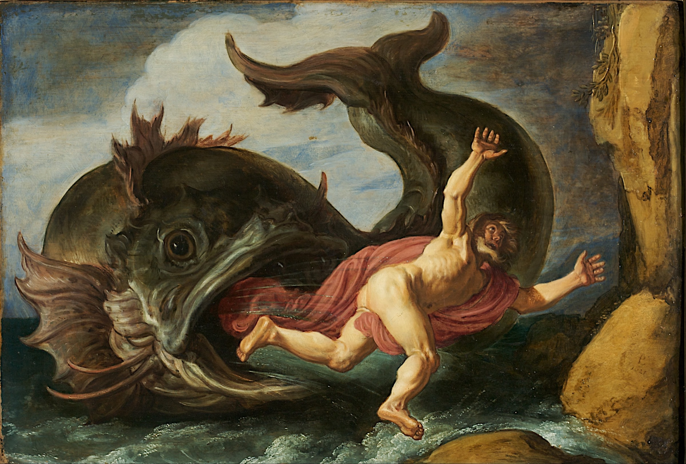
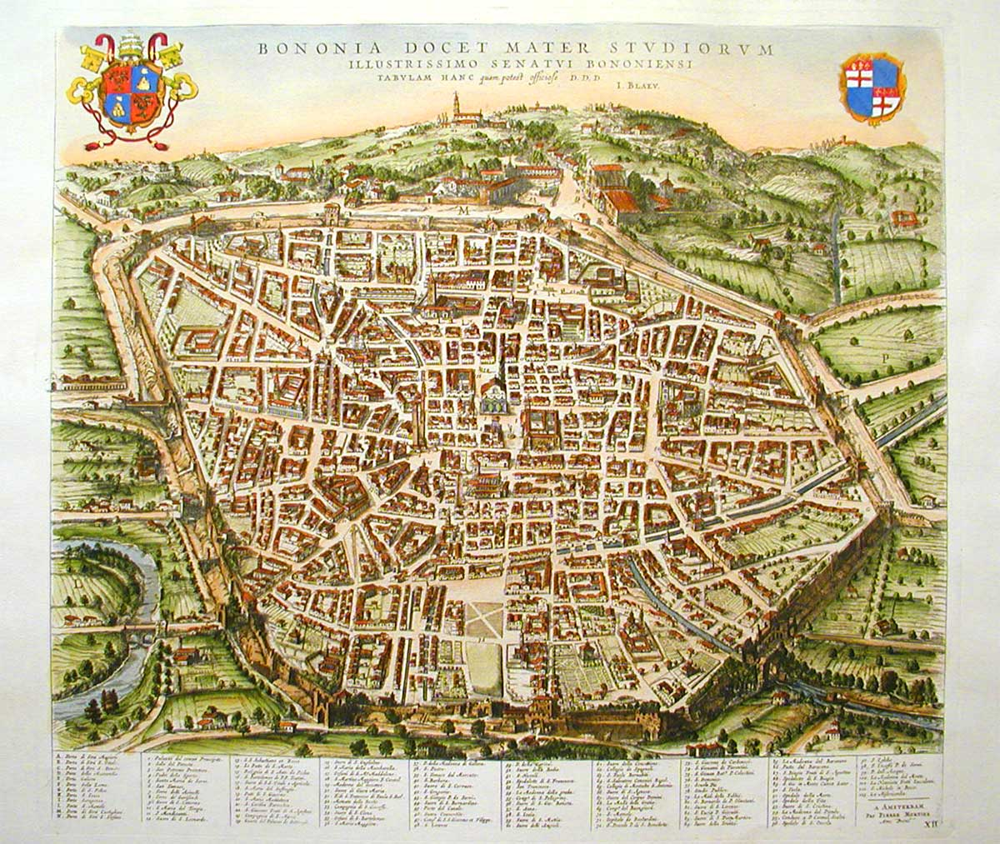
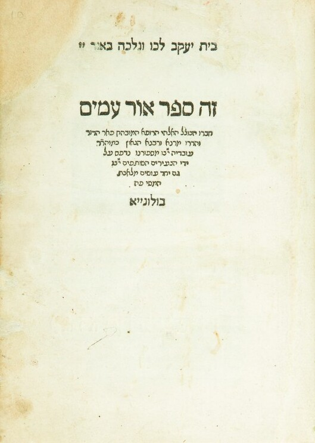
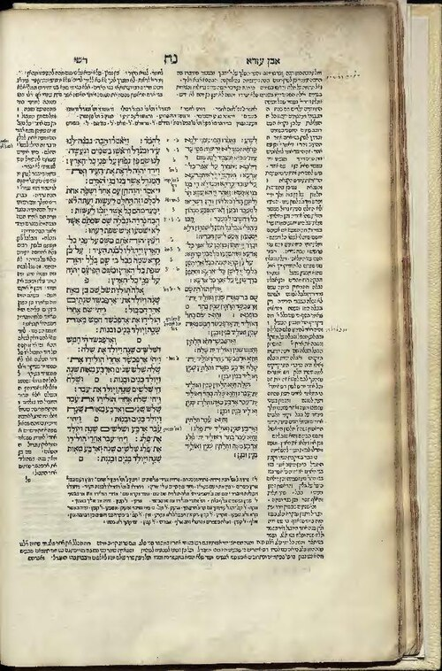
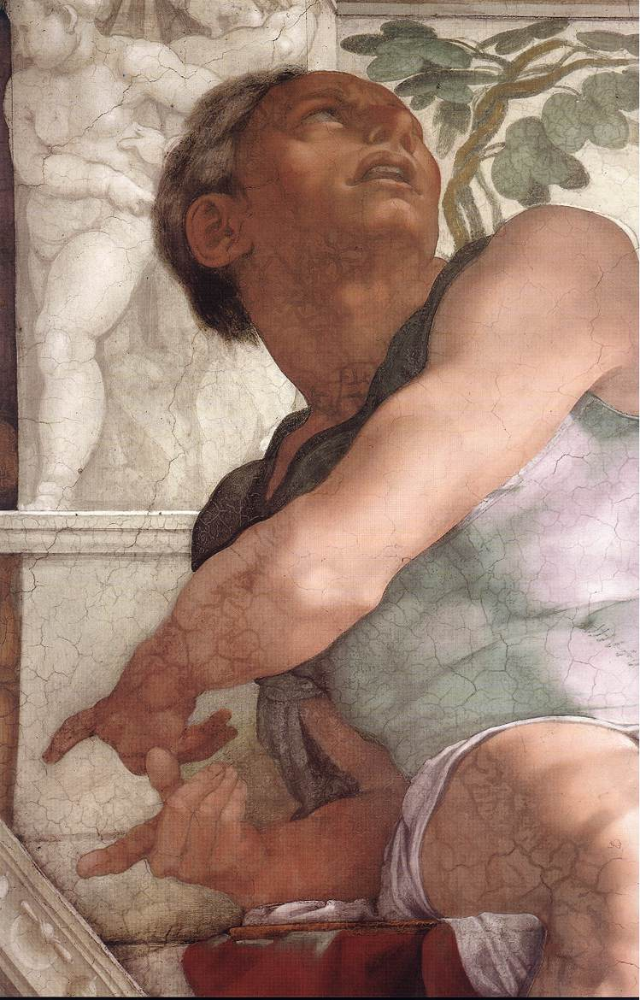
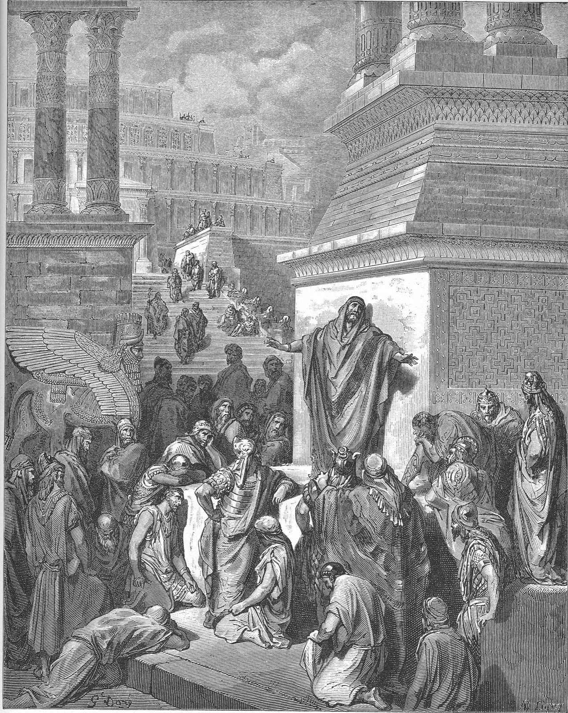
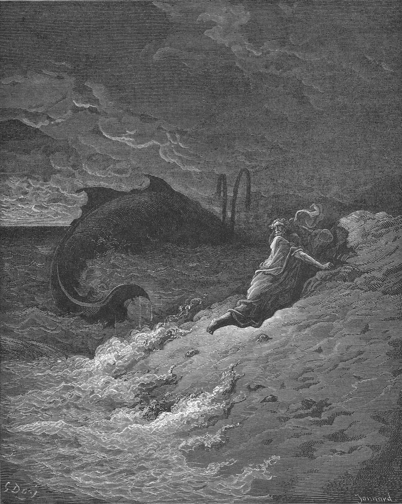

He goes with the simple meaning of the words.
He looks closely at the exact word the pasuk uses.
He asks what it teaches us about people.
"But Jonah rose up to flee unto Tarshish from the presence of the LORD; and he went down to Joppa, and found a ship going to Tarshish"JPS 1917

You leave a place because something bad is there.
You run from something that is chasing you.
Prophecy comes in Eretz Yisrael. Yonah thought that if he left the Land the message about Nineveh would stop coming to him.

"for I knew that Thou art a gracious God, and compassionate, long-suffering, and abundant in mercy, and repentest Thee of the evil."Yonah 4:2 JPS 1917
Yonah knew Nineveh would do teshuva. He knew Hashem would forgive them.

Yonah still believed in Hashem. He made a mistake and Hashem gave him a chance to fix it. Hashem also wanted to teach him about mercy. That is what chapter 4 is about.
A student gets picked to give a speech he does not agree with. He stays home sick so no one can give it to him. The principal calls his house anyway.
That is Yonah. He left the place where the job was given. The job still found him.
Yonah left the Land so the prophecy could not reach him. Hashem went after him because he still had work to do and something to learn.